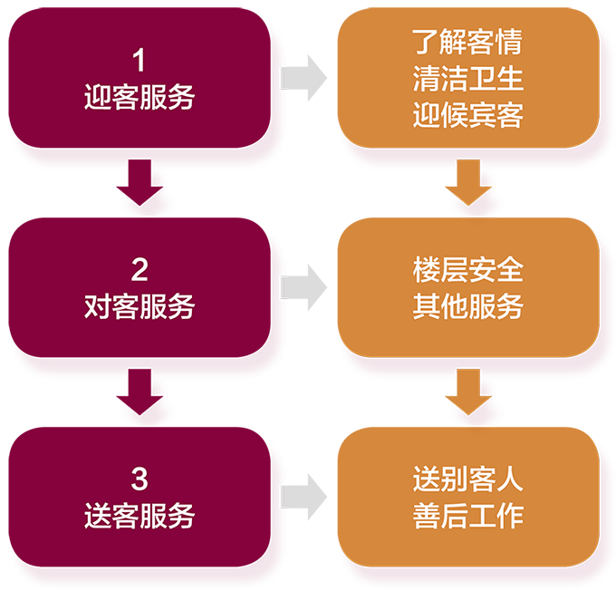

p.1
一、学习领域
二、学习情境
三、学习目标
客房服务是项目多、内容杂、随机性强的服务工作。客房部服务水平的高低，直接影响到住店宾客对饭店接待水平的评价，从而影响饭店客源的稳定性和持续性，并影响饭店“回头客”的接待量，因此通过本模块的学习达到：
p.2
四、情景描述
张福林按照人力资源部的安排来到了客房部服务中心，客房部经理为其安排了工作岗位，首先是在客房服务中心熟悉客房部各项工作安排及内容，然后到客房学习客房清扫工作，最后在客房部其他工作岗位进行观摩式学习。
五、任务内容
学生分为三组，分别模拟客房部服务的四项主要工作任务：

图 1 客房部服务流程图